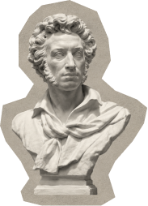
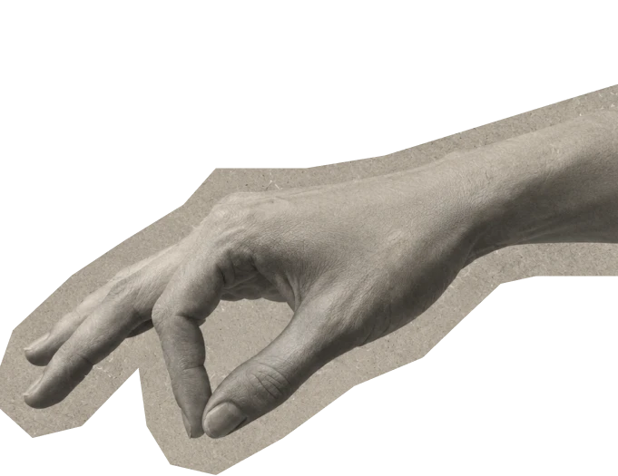
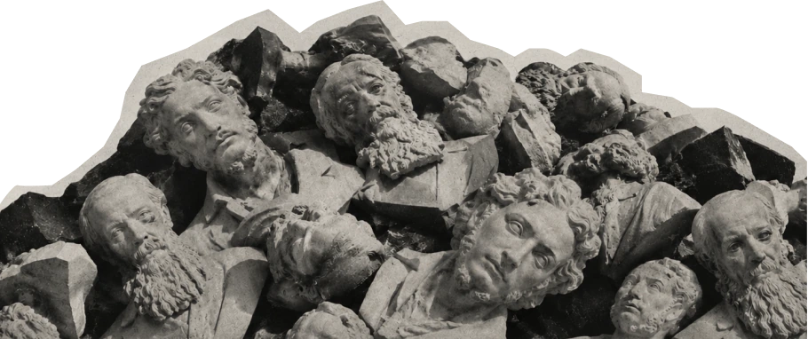
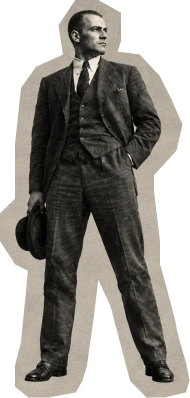
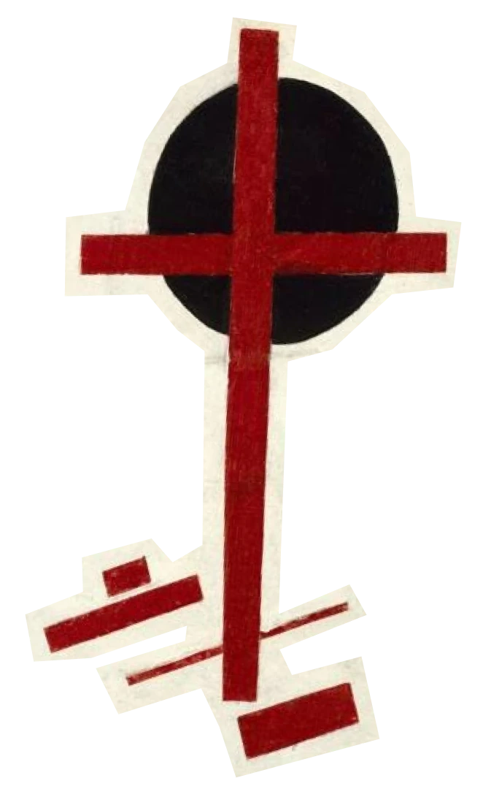
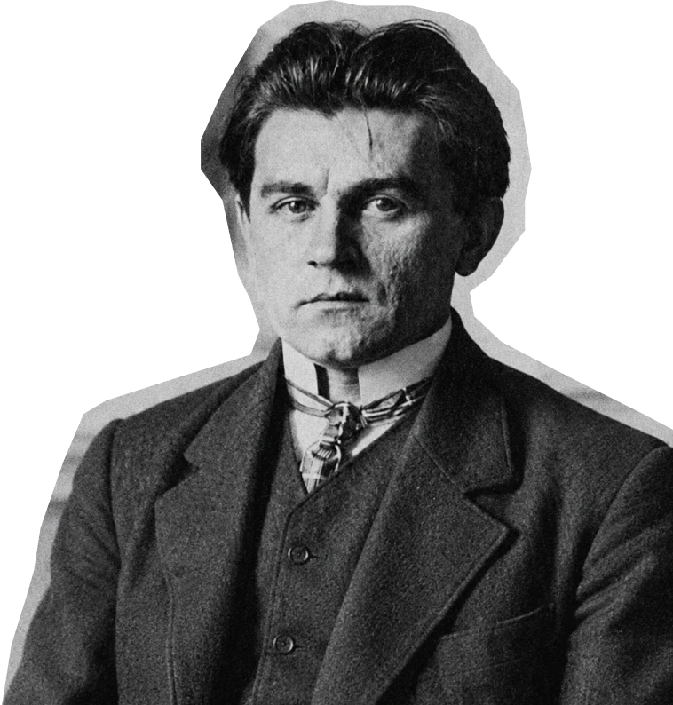
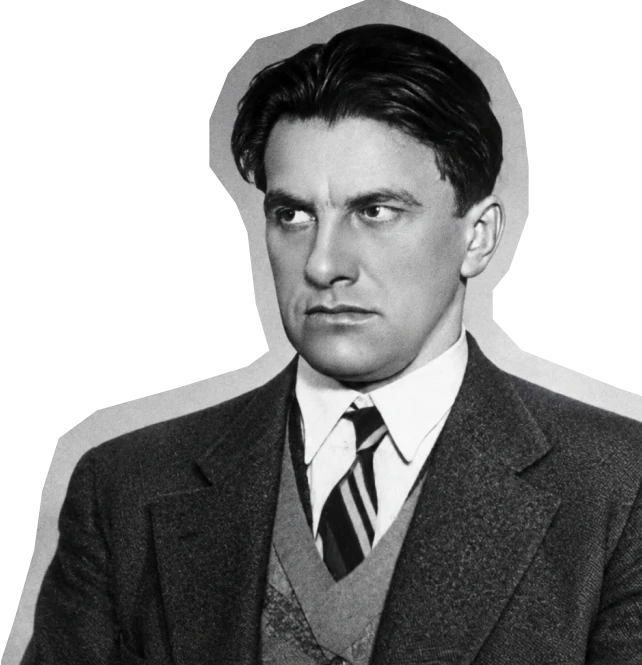

Авангард
Я узнавала его раньше, чем понимала.
Это рассказ о том, как я полюбила
русский авангард.
Сначала один вопрос к вам.
Авы понимаете
авангард?
Я всегда считала, что это нечто советское и безликое… в смысле, лишённое индивидуальности. Как может выражать протест то, что принадлежит всем? Но в этом я ошиблась. Так было не всегда, а вернее никогда так не было.
Квадрат Малевича я узнала раньше,
чем поняла, что он на самом деле значит.
Маяковский в школе почти терялся
среди других писателей.
Обе эти небезызвестные фигуры авангарда
объединяет одно: оба начинали
до революции с разрыва
со старым порядком.
Начнём с жеста, который знают все.
Пощёчина общественному
вкусу
В конце 1912 года группа молодых поэтов
выпускает сборник с манифестом.
Он называется «Пощёчина общественному
вкусу». В нём предлагается сбросить Пушкина,
Достоевского и Толстого «с парохода
современности». Манифест подписали четверо:
Давид Бурлюк, Александр Крученых, Владимир
Маяковский и Велимир Хлебников.
Это тот самый шок, который удивил
меня в школе.


Бросать вызов можно только тому, что все узнают: удар по неизвестному никто бы не заметил. Поэтому жест «против всех» ориентируется на то, что все уже считают ценным. Расстояние до большинства задано тем, где стоит большинство.
Когда в 1917 году старый порядок
исчез, жесту «против» стало
не к кому обращаться. Новая
власть сама решала, что делать
с таким искусством.


Юбилейное
Двенадцать лет спустя, при новой власти, Маяковский
пишет в 1924 году стихотворение «Юбилейное»
к 125-летию Пушкина. Теперь он обращается
к поэту лично:
«Александр Сергеевич, разрешите
представиться. Маяковский».
Юбилейное
Пушкин здесь собеседник, а не груз на борту. Мумию
он не любит:
«Я люблю вас, но живого, а не мумию».
Юбилейное
Спорит он теперь с тем, что сделали с поэтом:
«навели хрестоматийный глянец».
В 1912 году мишенью был классик
как образец вкуса. В 1924-м мишень
сместилась на глянец, которым
классика покрыли. Изменился не Пушкин,
а то, против чего направлен жест.
«Юбилейное», журнал «ЛЕФ», № 2, 1924.
Но в «Юбилейном» Маяковский говорит не только о Пушкине, но и о себе. От поэта новой власти ждут, что он будет прославлять революцию, а самого его гложет другое: одиночество, ревность, творческий кризис. Об этом он говорит с Пушкиным. Это открывает Маяковского для меня с другой стороны, уже не как неустанного певца революции, но как человека, который тоже… боится. Он именно боится: быть забытым и стать мумией, как Пушкин.
По логике модерна дальше
под вопросом оказывается сакральное:
если можно усомниться в Пушкине
и Толстом, следующим на очереди
будет Бог.
Малевича упрекали в том, что чёрный
квадрат отменяет всё светлое и доброе.
Так, например, писала Татьяна Толстая
в эссе о «Чёрном квадрате».

Бог не скинут
1922
«Бог – покой, покой – совершенство»
Но в 1922 году в Витебске Малевич издаёт брошюру
«Бог не скинут. Искусство, церковь, фабрика». Название
перекликается с «сбросить с парохода». Была ли эта
перекличка намеренной, я не знаю.
Супрематизм
от латинского supremus, «высший»
Так называя своё направление, Малевич считал его высшей ступенью, когда искусству больше не нужна предметность.
О Боге Малевич размышляет в трактате «Супрематизм. Мир как беспредметность, или вечный покой» (1922). Он пытается описать то, что рационально не постижимо, и потому говорит метафорами и парадоксами. Его мысль оставляет место для разных трактовок.
Маяковский удивил меня протестом. С «Чёрным квадратом» Малевича было иначе: в Третьяковке я только чувствовала, что стою перед легендарной картиной. Понимать её я начала на курсе истории искусств. Преподавательница рассказала про выставку «0,10» 1915 года: «Чёрный квадрат» висел там в красном углу, где в доме обычно вешали икону.
Бога нельзя скинуть:
он в каждой частице мира.
Поэтому Малевич не сбрасывает его,
а пишет ему новый образ — чёрный квадрат.
Меня поразила глубина и широта высказывания, которая помещена в чёрный квадрат, помещена в саму личность Малевича.
Эту связь с Богом действительно было сложно осознать, потому что совсем не сходится с представлением об авангарде как о советском и безликом: ведь советское не может быть про Бога.
Что сделал сам и что решили другие
Дальше обоих ждала разная судьба. Маяковского сначала критиковали, а после 1935 года сделали классиком. Малевичу и его ученикам давали заказы, а потом отказывались от их проектов.
В обоих случаях решали не сами авторы.


Маяковский
Сделал сам
- 1912
Подписывает манифест «Пощёчина общественному вкусу».
- 1921
Выпускает поэму «150 000 000».
- 1924
«Юбилейное»: спорит с глянцем, которым покрыли Пушкина.
Решили другие
- 1921Ленин
Пишет о поэме «150 000 000»: «Как не стыдно голосовать за издание 150 000 000 Маяковского в 5000 экз.?»
- 1935Сталин
Лиля Брик жалуется, что поэта не издают. Сталин пишет Ежову: «Маяковский был и остаётся лучшим, талантливейшим поэтом нашей советской эпохи. Безразличие к его памяти и его произведениям — преступление».
- 1935–1938Государство и школа
Площади и улицы получают его имя, выходят миллионные тиражи, стихи входят в школьные и вузовские программы. Музей открывается 15 октября 1938 года.
- 1950-еТеатры
Пьесы «Баня» и «Клоп» начинают широко ставить только теперь.
Маяковский стал поэтом новой власти. В 1930 году он застрелился, а в 1935-м Сталин назвал его «лучшим, талантливейшим поэтом нашей советской эпохи». Из него сделали классика, того самого, чьей мумии он боялся.
Малевич
Сделал сам
- 1915
Показывает «Чёрный квадрат» на выставке «0,10». Картину вешают в «красном углу».
- 1919
Приезжает в Витебск, где работает до лета 1922 года.
- 1922
Выходит «Бог не скинут».
Решили другие
- Декабрь 1919Заказчик
Первый крупный заказ ученикам Малевича, группе УНОВИС: оформить годовщину Комитета по борьбе с безработицей.
- 1920Город
Уновисы оформляют город к праздникам, в том числе к Первомаю.
- 7 ноября 1920Власти
Отказываются от проектов УНОВИСа по оформлению города.
- 1927Власти
Отзывают Малевича из Берлина, его картины остаются в Германии.
- 1929Третьяковская галерея
Ему устраивают ретроспективу. Взамен оставшихся в Германии работ он пишет «сорок новых полотен».
Малевичу власть то заказывала работы, то отказывала. Он умер в 1935 году, и его картины надолго ушли из публичного показа.
Следующий читатель
Новый порядок оказался требовательнее прежнего. Ни один из них не решал, каким войдёт в историю. Решали другие. Поэтому я так долго знала «Квадрат» и не понимала его.
Мой ответ
Я не считала, что это не искусство. Я не понимала, но знала, что за этим стоит больше, чем моё непонимание.
Понимать я начала не перед картиной в Третьяковке, а на курсе истории искусств. С Маяковским меня остановил скандал: на уроке я узнала, что он шокировал публику. И в том и в другом случае меня сдвинул контекст, а не любовь.
Оба начинали с разрыва со старым порядком. Что осталось от этого жеста, решали уже не они.
Любить меня никто не заставлял. Возможно, поэтому мне было проще: можно было просто разбираться.
Теперь я понимаю, что за квадратом и школьным уроком стоят люди своей эпохи.
Я понимаю больше, чем раньше. Теперь хочу узнать, как эти люди думали.
Выводы здесь мои, это не факты. Сверяйте со своими.